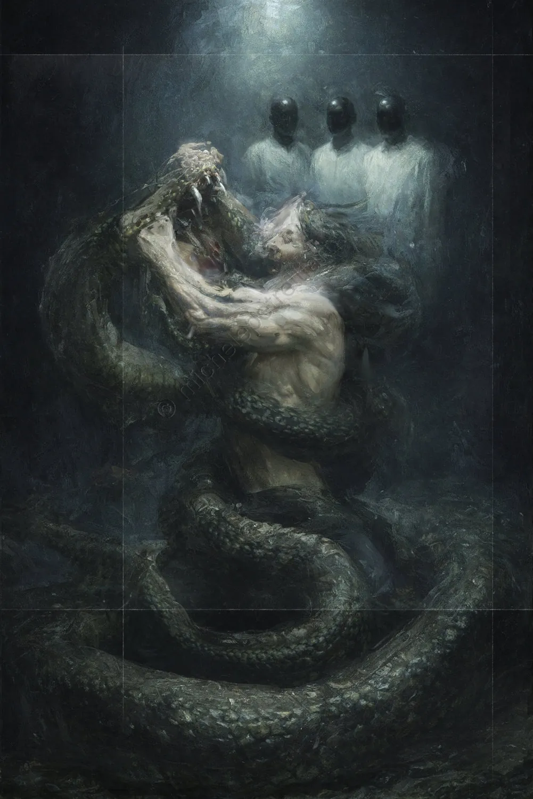

4217 The Web of Determinism
The serpent is not a predator, but the plastic visualization of the inextricable web of determinism that envelops every body, every muscular fiber, and every event within the Field. The man fights it with desperate ferocity, a resistance that is itself part of the mechanism: he perceives the constraint of the coils as a threat to his presumed freedom, failing to understand that the categories of "freedom" and "constraint" are merely labels produced by the same absence of agency. In this perspective, the serpent emerges as the supreme enemy, the most difficult to overcome, because it represents the mirror reflection of the fear of death—understood not as biological cessation, but as the final dissolution of the narrative of the self. Every attempt to strike a blow or break free from the grip only feeds the illusion of a separate entity that acts, when in reality there is only a single, simultaneous, and necessary dance of forces.
In the background, the three figures in white coats and black masks observe the scene with the icy detachment of one witnessing a chemical process or a neuronal reaction in a controlled environment. Their presence is devoid of empathy, stripped of all moral or human judgment; they do not intervene because they know there is no one to save, nor a conflict to resolve. These figures represent the extreme limit of the painting, the inexorable structure of the Field that defines the space in which the struggle must occur. They are the witnesses of a "factory of reality" where the man and his projection struggle within a hollow that is, in fact, an ontological trap. Their immobility underscores the futility of the frenetic movement in the foreground: while the man exhausts himself to assert his existence through conflict, the three masked figures embody the stasis of Radical Non-Dual Determinism, where everything is already given and where observation does not modify the object, but simply validates its inevitable occurrence.
This license does not allow you to modify or use these images for commercial purposes.
You are allowed to share them only by clearly crediting and tagging the author.